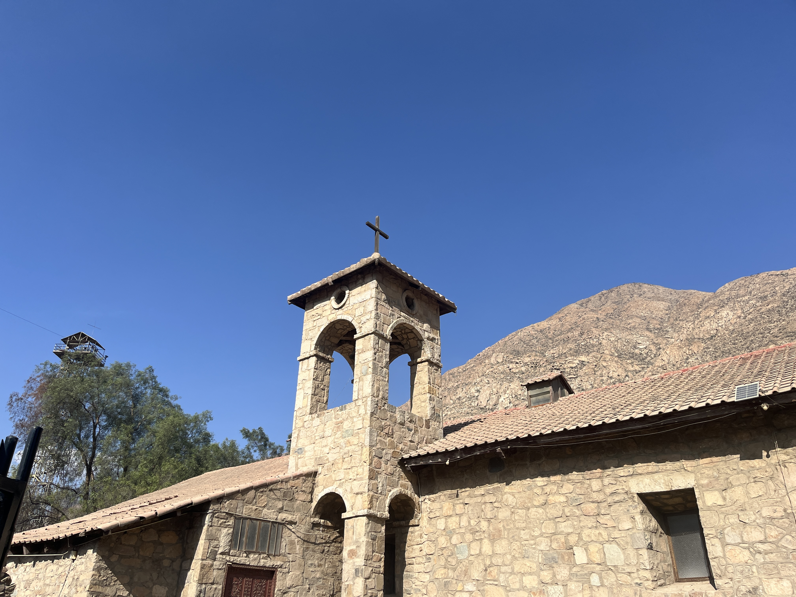
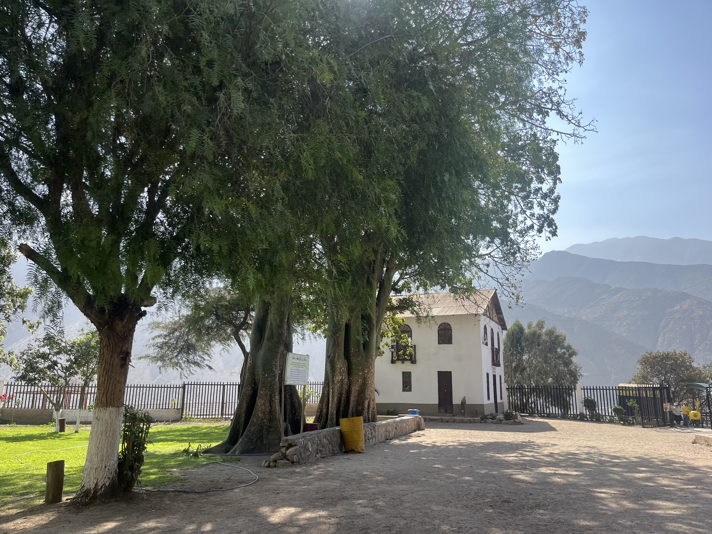
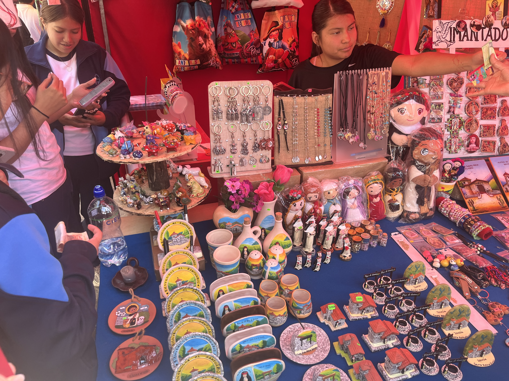
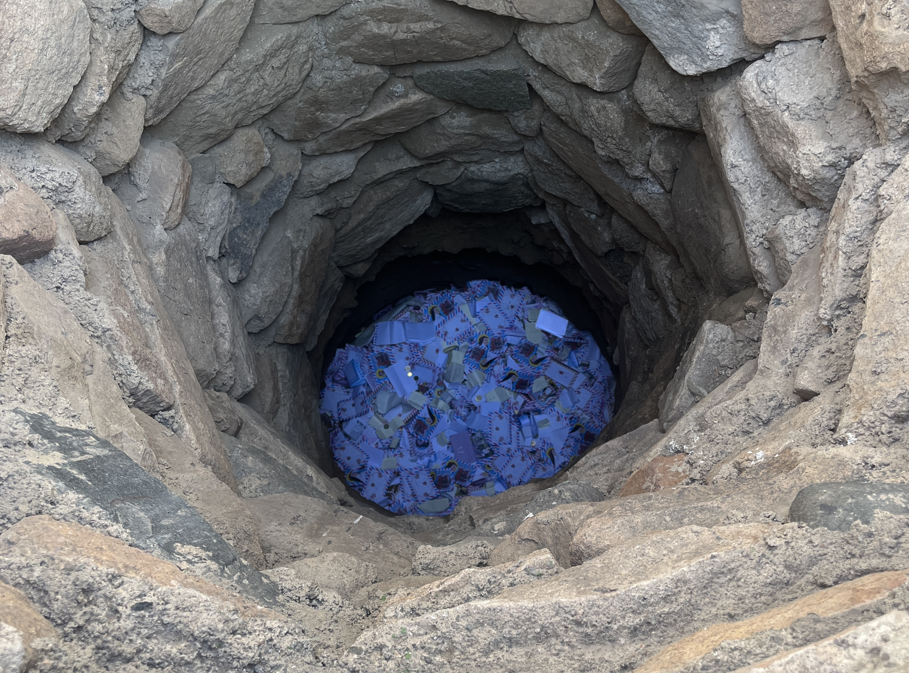
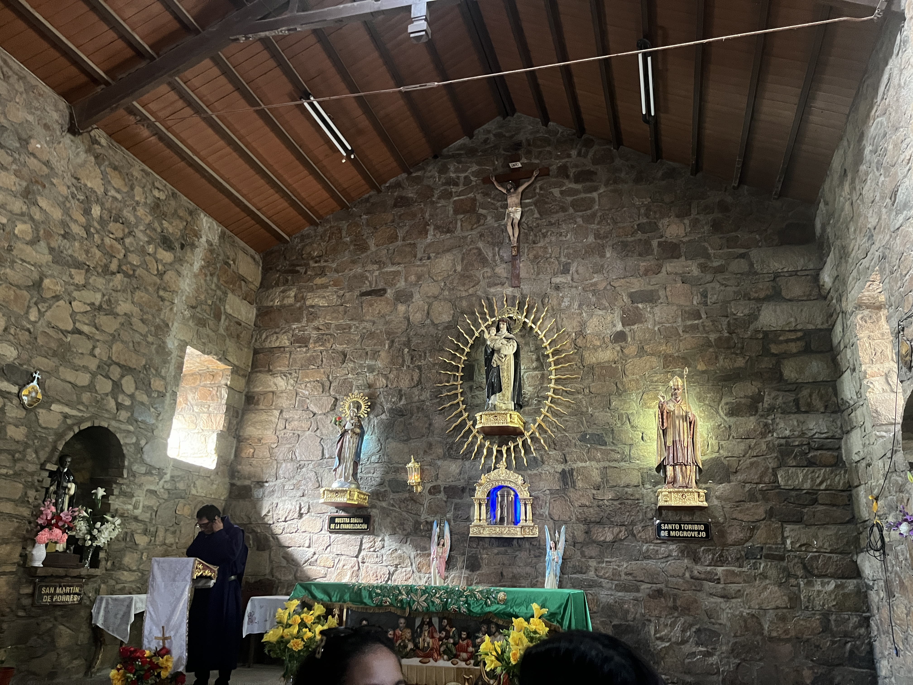

Descubre, explora y apoya la cultura local de Santa Rosa de Quives. Una plataforma que conecta a los visitantes con la historia, la naturaleza y los emprendedores de la comunidad.

Principal atractivo religioso e histórico de la localidad, vinculado a la vida de Santa Rosa de Lima.

Espacios desde donde los visitantes pueden apreciar los paisajes del valle y tomar fotografías.

Zona donde emprendedores locales ofrecen recuerdos, productos artesanales y artículos religiosos.
Santa Rosa de Quives es un importante destino religioso ubicado en la provincia
de Canta, en la región Lima. Este lugar está estrechamente relacionado con la
vida de Santa Rosa de Lima, la primera santa de América, quien pasó parte de su
infancia y juventud en esta localidad junto a su familia. Durante su estancia
en Quives, participó en diversas labores cotidianas y fortaleció los valores de
fe, servicio y solidaridad que más tarde la caracterizarían.
Actualmente, el Santuario de Santa Rosa de Quives conserva espacios históricos
vinculados a su vida, como la iglesia, el pozo de los deseos y otros lugares de
gran valor cultural y religioso. Gracias a su importancia histórica, espiritual
y turística, recibe miles de visitantes y peregrinos cada año, quienes acuden
para conocer más sobre la vida de la santa, participar en actividades religiosas
y disfrutar del patrimonio cultural de la zona.

Esta guía permite a los visitantes identificar los principales puntos de interés y planificar su recorrido dentro de Santa Rosa de Quives, facilitando una experiencia turística más organizada y enriquecedora.

Los visitantes podrán disfrutar de diversas actividades que combinan naturaleza, cultura, gastronomía y tradición.
Los visitantes podrán conocer y adquirir diversos productos elaborados por artesanos de la comunidad, contribuyendo al desarrollo económico local y a la preservación de las tradiciones culturales.